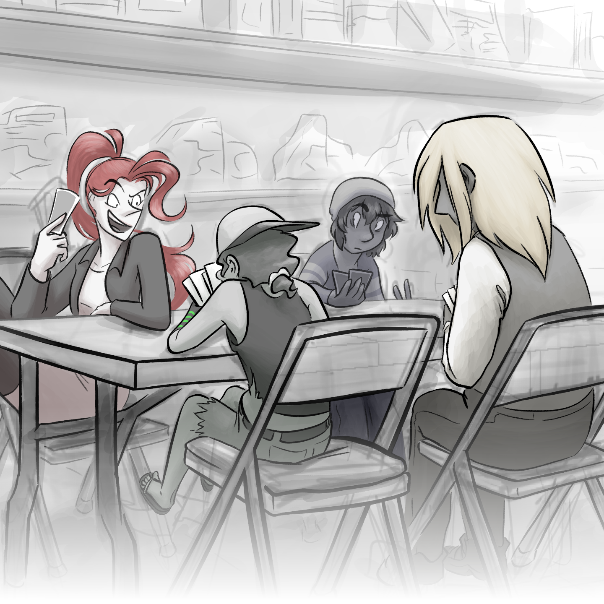

<div id="center"><div id="screen">
<header><picture><source media="(orientation:landscape)" srcset="site-assets/menu-l.png" alt=""/></picture><div class="x"><p>Four characters sit around a table, playing some type of card game.</p><p>To first-time visitors, keep reading; for those returning, <a href="#main">skip to the title</a>.</p><p>404 is an experimental webcomic. It often makes use of visual cues, such as this homepage resembling a game menu, to convey the story. These are transcribed when relevant, but many details have been left to the imagination. If you encounter any issues, or areas that need more clarification, contact information is on the bonus page. Thank you!</p><!--And to curious code readers: anything with a class of "x" is an accessibility hack. Captions are written in standard English syntax regardless of who’s talking and other visual embellishments. There shouldn’t be anything here that can’t be visually discerned, but some descriptions may be subjective.--></div></header><main><div id="wrap">
<h1 id="main">404</h1>
<ul>
	<li><del>New Game</del> <a href="1-reset/1">Start</a></li>
	<li><del>Continue</del> <a href="bonus/sibling-comix/1">Latest</a></li>
	<li><del>Settings</del> <a href="archive">Archive</a></li>
	<li><a href="bonus">Bonus</a></li>
</ul>
</div></main>
</div></div>